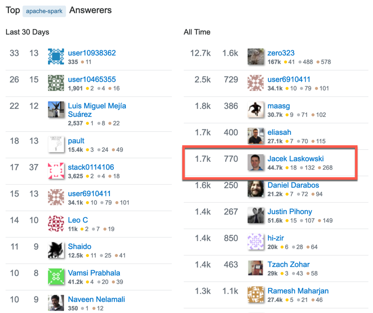

Apache Kafka™
for Administrators and Operators
Workshop 2 Days
@jaceklaskowski / StackOverflow / GitHub
The "Internals" Books: Apache Kafka / Kafka Streams
Jacek is best known by the online "Internals" books:
Jacek is active on StackOverflow
(Apache Kafka Streams)

Jacek is active on StackOverflow
(Apache Spark)

Prerequisities
Be prepared to get the most out of the workshop
Prerequisities / Experience
- Some familiarity with messaging systems
- Experience with shell / command line
Prerequisities / To Be Installed
- Java Platform, Standard Edition (Java SE) 11
- IntelliJ IDEA Community Edition with Scala plugin
- Linux or macOS preferred
In-Class Preparations
Make Instructor's Life Slightly Easier. Thanks!
Introduce Yourself
- First name
- What's your experience with Kafka?
- Any production experience with Kafka?
- What do you expect from the workshop?
Addendum
- Put your name on paper in front of you
- Stick to your laptop if possible
- Use LARGE fonts
- 1-hour lunch at 12:15pm